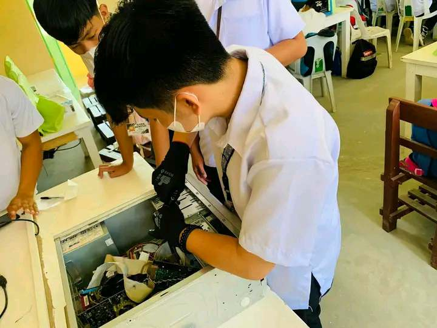
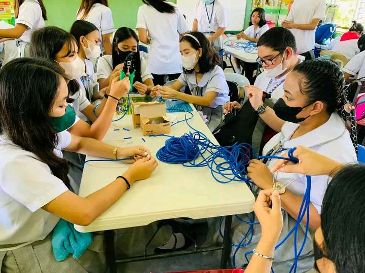

ICT students are enthusiastically engaging in programming activities, working diligently to write code, solve complex problems, and develop practical applications that address real-world challenges and meet the needs of today's digital society.

ARRANGEMENT
ICT Students are skillfully engaged in the intricate task of fixing and arranging motherboards, meticulously connecting components, and troubleshooting hardware issues to ensure optimal performance and functionality of computer systems.

CABLE WIRING
ICT students are adeptly involved in the precise and meticulous task of wiring cables, carefully connecting and organizing the intricate network of wires to establish seamless communication and data transfer within computer systems and networks.